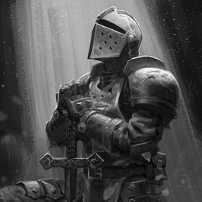
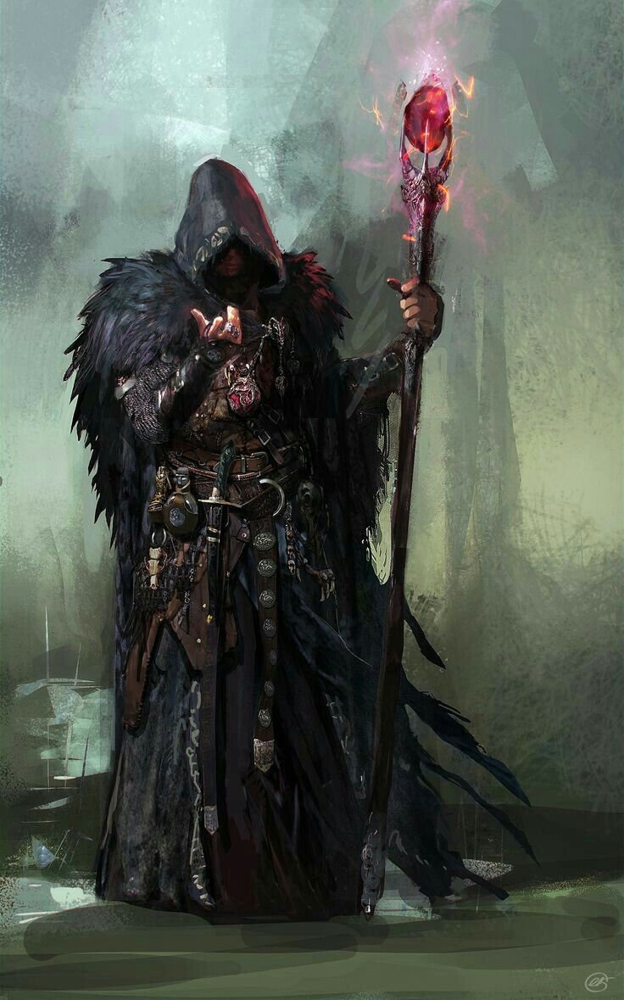
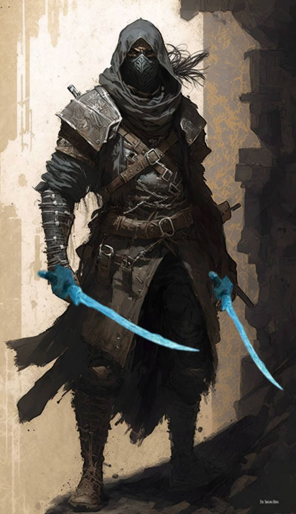

O guerreiro é um combatente especializado em armas, armaduras e batalhas.
- Especialista em combate
- Grande variedade de armas
- Alta resistência
Escolha o seu caminho

O guerreiro é um combatente especializado em armas, armaduras e batalhas.

O mago utiliza conhecimentos arcanos para lançar poderosas magias.

O ladino é especialista em furtividade, agilidade e ataques precisos.
Essas classes oferecem diferentes estilos de jogo e podem ser escolhidas de acordo com o personagem que você deseja criar.